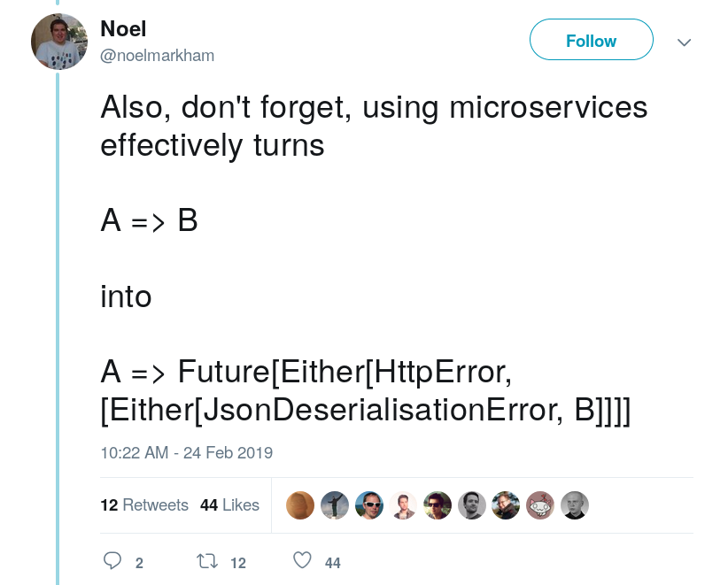

A Quest for the Right Level of Coupling
http://julienrf.github.io/2019/endpoints

val b: B = service.compute(a)A => B function!“Distribution transparency is impossible to achieve in practice. Precisely because of that impossibility, it is dangerous to provide the illusion of transparency”. Rachid Guerraoui et al., 1999
import akka.actor.typed.scaladsl.AskPattern._
val eventualB: Future[B] = serviceRef.ask(ref => Compute(a, ref))(A, ActorRef[B]) => Unit function
val eventualB: Future[B] =
httpClient.post("http://service/compute", a.toJson)
.filter(_.status == 200)
.flatMap(_.entity.asJson.to[B])val eventualB: Future[B] = service.compute(a)(assuming that you have generated service implementation class with a tool like scalaxb)
Idea: mitigate code generation issues by synthesizing code with macros instead
trait Service {
def compute(a: A): B
}
val service = synthesized.Client[Service]
val eventualB: Future[B] = service.compute(a)Any questions?